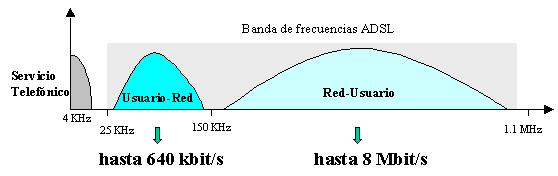

Sistemas en red#
Los sistemas en red son un medio de comunicación común a través el cual todos los dispositivos pueden compartir información, recursos, etc, independientemente del lugar físico donde se encuentre el usuario o el dispositivo.
Podemos ver una red como algo abstracto que ofrece un determinado servicio en los puntos de terminación de red (ptr)

algunos de los parámetros más característicos de una red son:
Cadencia efectiva (Cef) “Throughput o caudal” Cantidad de bps que se pueden introducir en la red en el punto de terminación de la red. no confundir con la capacidad nominal de enlace Cef < C
Retardo de transito (T). Tiempo dado que la red recoge un bit en el punto de terminación de origen hasta que se recibe en el (ptr) de destino. T>propagación de señal. Cef.T = Memoria de la red, es la información que ha salido del origen, pero no ha llegado a su destino
Tasa de fallos. Probabilidad de que un bit no llegue a correctamente a su destino.
Disponibilidad del servicio y cobertura
TIPOS REDES#
Medios de transmisión
Ondas electromagnéticas no guiadas
Radio
Infrarrojos
Ondas electromagnéticas guiadas
Luz, por fibra óptica
Impulsos eléctricos
Siempre por un cable
Propietarios de la red
Red privada
Los medios de transmisión y ordenadores son de una misma entidad (organización, empresa,…)
Existe una alta confidencialidad
Red pública
Los medios de transmisión se alquilan a otras empresas: ADSL, 3G,…
La información enviada puede ser visible a terceros
VPN
Los medios de transmisión se alquilan a otras empresas
La información se encripta antes de enviarse
Cobertura
PAM : Red de área personal, es una red de ordenadores usada para la comunicación entre los dispositivos del ordenador cerca de una persona
<10 m
Bluetooth, RFID
LAN : red de área local, es una red que se limita a un área especial, relativamente pequeña, tal como un cuarto, un aula, un solo edificio, una nave, o un barco.
< 2-4 km
Ethernet
MAN : red de área metropolitana
< 10 km, con muchos ordenadores
FTTH, ADSL
WAN : red de área extensa
Extensión mundial
Fibra óptica
Tipos de conexión a la Red#
La red telefónica básica o red telefónica conmutada ( RTB o RTC ) permite que hablemos por teléfono, pero si utilizamos un módem podemos transmitir datos a baja velocidad.
La Red Digital de Servicios Integrados, comúnmente llamada RDSI. divide la línea telefónica en tres canales: dos B o portadores, por los que circula la información a la velocidad de 64 kbps, y un canal D, de 16 kbps, que sirve para gestionar la conexión. Se pueden utilizar los dos canales B de manera independiente (es posible hablar por teléfono por uno de ellos y navegar por Internet simultáneamente), o bien utilizarlos de manera conjunta, lo que proporciona una velocidad de transmisión de 128 kbps.
El bucle de abonado digital asimétrico , más conocido como ADSL , la operadoras de telefonía ofrecen la posibilidad de utilizar una línea de datos independiente de la línea de teléfono, aprovechando el ancho de banda disponible por encima del requerido por el servicio telefónico hasta el límite permitido por la propia línea.
En el servicio ADSL el envío y recepción de los datos se establece desde el ordenador del usuario a través de un módem ADSL. Estos datos pasan por un filtro (splitter), que permite la utilización simultánea del servicio telefónico básico (RTC) y del servicio ADSL. Es decir, el usuario puede hablar por teléfono a la vez que está navegando por Internet, para ello se establecen tres canales independientes sobre la línea telefónica estándar:
Dos canales de alta velocidad (uno de recepción de datos y otro de envío de datos).
Un tercer canal para la comunicación normal de voz (servicio telefónico básico).

Telefonía móvil mediante UMTS o telefonía 3G , Sistema Universal de Telecomunicaciones Móviles UMTS, proporcionan la posibilidad de transferir tanto voz y datos (una llamada telefónica o una videollamada) y datos no-voz (como la descarga de programas, intercambio de correo electrónico, y mensajería instantánea).
La 4G está basada completamente en el protocolo IP, siendo un sistema y una red, que se alcanza gracias a la convergencia entre las redes cableadas e inalámbricas. La principal diferencia con las generaciones predecesoras será la capacidad para proveer velocidades de acceso mayores de 100 Mbit/s en movimiento y 1 Gbit/s en reposo.
La 5G mejora la velocidad de la 4G mediante el uso de ondas de radio de altas frecuencias, que pueden superar 10 (Gbit/s).
Internet por cable , usando cable módem o enrutadores, las redes de cable ofrecen la posibilidad de utilizar cable de fibra óptica combinado con cable coaxial, para dar una alta velocidad en el acceso a Internet.